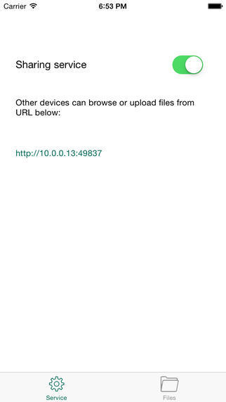
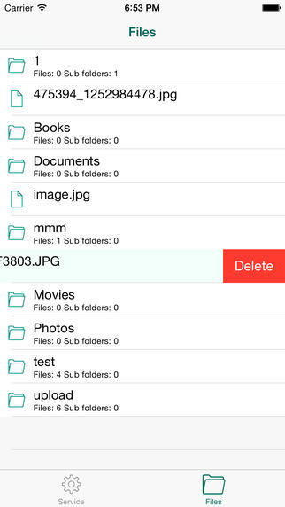

MarkDisk - 用iPhone当作web服务器
categories:应用
有一天我脑洞大开，想用iPhone作为web服务器，于是周末花了点时间做了这个应用。
功能极其简单：
可以开启web 服务：

然后你就可以在电脑上通过上面的URL地址上传各种文件了。
上传后可以iPhone上管理和浏览文件。

如果你和我一样是个极客，你可以把你做的很炫的web应用随身携带了。
如果你并不需要一个web服务器，下面的场景也可以帮助到你：
通过WIFI传输文件: 无需数据线就可以在iPhone和电脑之间传输文件；
随身的文档阅读器：iPhone端和浏览器端都可以浏览文档；支持各种格式；
随身的媒体播放器：iPhone端和浏览器端都可以播放视频；
没有容量限制，只要您的iPhone存储足够大;
兼容性好，iOS6～iOS9都支持
如果你也有类似的需求，可以从下面的链接下载这个应用：
